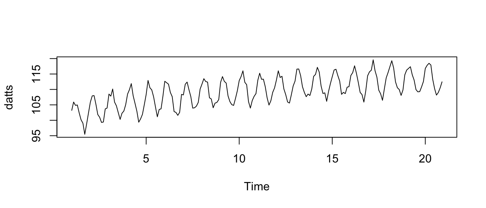

Chapter 25 Regression when order matters: time series and spatial analysis
Caution: in a highly developmental stage! See Section 1.1.
25.1 Timeseries in (base) R
To add: times() function to extract times from a ts object. How to deal with the start and end arguments when declaring a ts object. tsibble.
This tutorial demonstrates timeseries objects, and stl decomposition.
Let’s make a periodic time series with a trend. The data can be contained in a vector:
p <- 10
n <- 20*p
dat <- 100 + sqrt(1:n) + 5*sin(1:n * 2*pi/p) + rnorm(n)It’s sometimes useful to make an object of type timeseries. Do this with the ts function in R. But, if there’s a cycle, we’ll need to indicate that in the frequency argument, which is the number of observations per cycle. In this case, the period is 10.
(datts <- ts(dat, frequency = p))## Time Series:
## Start = c(1, 1)
## End = c(20, 10)
## Frequency = 10
## [1] 103.21754 105.91580 104.83864 104.95717 102.39761 100.16522 99.05889
## [8] 95.45752 98.82458 102.38751 105.87370 107.90868 107.99882 105.15553
## [15] 101.85446 100.97420 99.30592 99.43404 103.68415 103.96424 108.49725
## [22] 107.82864 110.13901 105.91080 104.69072 102.47787 100.28452 102.28791
## [29] 102.98962 105.07804 108.48962 109.90927 111.88973 107.97297 105.49662
## [36] 102.94541 99.37422 100.46106 101.93015 105.08458 108.37343 112.91619
## [43] 110.54639 109.85470 107.58933 104.30931 101.13197 103.51062 103.70481
## [50] 107.80956 112.64128 112.17872 111.69756 109.02738 107.65240 102.82118
## [57] 102.55838 101.59620 102.58794 108.39129 108.22220 111.68111 112.38680
## [64] 109.89085 107.64715 103.95064 104.05229 104.58863 105.80332 110.13285
## [71] 111.74829 113.48269 112.55860 112.38119 107.30248 106.90023 104.05653
## [78] 105.55904 105.79333 106.69931 112.30687 114.16458 112.60809 112.06290
## [85] 107.88068 106.05464 105.06568 104.82710 107.07606 109.59339 112.85742
## [92] 114.17000 116.02830 112.32351 111.54292 106.05268 103.95440 106.38489
## [99] 107.75039 108.63916 112.98128 115.25202 113.28984 113.32760 110.88573
## [106] 107.29349 104.92971 106.31116 109.04618 110.50209 113.04955 116.03563
## [113] 113.86822 114.25950 110.16575 108.30924 105.93633 105.57833 108.23428
## [120] 111.13209 112.69828 116.58603 116.62520 114.48533 110.87280 109.05280
## [127] 107.64914 108.50262 108.03575 110.17362 114.24526 114.86152 117.16433
## [134] 115.62492 111.14091 108.68635 108.89239 106.14608 109.30500 111.86138
## [141] 114.12111 116.30034 116.54151 114.48581 112.69920 108.40186 109.04775
## [148] 108.65297 110.73409 110.89099 114.51551 115.45327 117.66094 115.21570
## [155] 112.25735 109.01924 108.33898 105.89822 109.48126 114.40889 115.69664
## [162] 116.23322 119.59398 116.06116 113.98155 109.75989 108.58419 106.47712
## [169] 110.16012 113.75350 115.48076 117.40757 119.30334 116.94545 112.45239
## [176] 110.55772 109.97846 108.06207 109.81071 114.74283 116.27391 116.81357
## [183] 117.35878 114.74181 113.03169 109.94563 109.22033 109.27958 110.81624
## [190] 112.57402 116.78555 117.82568 118.46380 117.92256 113.27395 110.26927
## [197] 108.16507 109.00154 110.52807 112.46218You can plot this object too. You’ll get a nice looking time series plot:
plot(datts)
And now you can decompose the trend, seasonal component, and error terms with stl. Note that stl requires a timeseries object! Be sure to put s.window="periodic" in the stl function to use the periodicity of the timeseries object. Notice that there are options to change the bandwidths of the loess estimation, along with the degree of the local polynomial, with the _.degree and _.window arguments.
fit <- stl(datts, s.window="periodic")The estimates are contained in the $time.series part of the output:
head(fit$time.series)## seasonal trend remainder
## [1,] 2.81645334 100.9702 -0.5691419
## [2,] 4.49487288 101.1557 0.2652700
## [3,] 4.81270600 101.3411 -1.3151472
## [4,] 2.85720184 101.5169 0.5830240
## [5,] -0.09010948 101.6928 0.7949093
## [6,] -2.98838094 101.8728 1.280816025.2 Spatial Example
Rocks were sampled at 54 sites along the river within a period of two days. The procedure to take one sample involves taking an underwater photo at a glide site along the river, and by using computer software, obtaining the lengths of the intermediate axes of each rock over 8mm in the photo area. To ensure accuracy of measurements, 25 photos of the same area are taken and combined.
25.3 A Model for River Rock Size
The variable \(x\) refers to a location of some distance downstream the river for example, distance downstream the Meadows campground. For the 54 sample sites, the locations are denoted by \(x_{1},\ldots,x_{54}\). There are three concepts related to rock size.
25.3.1 1. Average rock size:
This is the average size of sampled rocks at a location, had that location been sampled. For location \(x\), the value of the sample average rock size is denoted \(m\left(x\right)\). These values are known for 54 sample sites, which are denoted for brevity as \(m_{1},\ldots,m_{54}\), represented as the dots in Figure
25.3.2 2. Mean rock size:
At a particular river location, this can be thought of as the average rock size in the bed load in the hypothetical situation where the river flows forever in the same condition as during the sampling period. At any location, this quantity is unknown, and will thus be referred to as a “mean” instead of an “average” (an average is a known calculable quantity). At a location \(x\), the mean rock size will be denoted \(M\left(x\right)\), and is represented by the solid line in Figure
25.3.3 3. Downstream fining curve:
This can be thought of as an “overall trend” for rock size from upstream to downstream. The mean rock size \(M\left(x\right)\) should “on average” follow this curve. For location \(x\), the value of the downstream fining curve will be denoted \(T\left(x\right)\), represented as the dashed line in Figure . At any location, this is an unknown quantity.
25.4 Statistical Objectives
Using the three concepts of rock size in Section, the following statistical objectives can be pursued to address the scientific objectives:
Estimate the downstream fining curve \(T\left(x\right)\) (i.e. the dashed line in Figure) for the range of the study area;
Estimate the mean rock size \(M\left(x\right)\) (i.e. the solid line in Figure) for the range of the study area, along with confidence bands
These objectives are addressed in Sections, but first some preliminaries are needed, discussed in Section.
25.4.1 Preliminaries: Variance and Correlation
Most of the techniques introduced in Sections require three descriptions of rock size, which are defined in Section. The procedure for fitting these descriptions to the data is discussed in Section . For a detailed review of these concepts, see Chapter 2 in reference @Geostatistics, for example.
25.5 Three Concepts
25.5.1 Error Variance \(\sigma_{E}^{2}\left(x\right)\)
At location \(x\), the error variance is the variability of the average rock size \(m\left(x\right)\) in comparison to the true mean rock size \(M\left(x\right)\). In other words, it is the variance of \(\left(m\left(x\right)-M\left(x\right)\right)\).
25.5.2 Mean Variance \(\sigma_{M}^{2}\)
At location \(x\), the mean variance is the variability of the true mean \(M\left(x\right)\) around the downstream fining curve \(T\left(x\right)\) (i.e. how “tightly” \(M\left(x\right)\) follows \(T\left(x\right)\)). It may be reasonable to assume that this variance is constant, unless there is evidence that this variability changes significantly throughout the study area. In what follows we will make this assumption; denote the variance of the true mean rock size as \(\sigma_{M}^{2}\).
25.5.3 Mean Correlation \(\rho\left(d\right)\)
The mean correlation measures how closely related two mean rock sizes are at different locations (and equivalently, the average rock sizes at those locations). The mean rock sizes at two locations immediately next to each other are expected to be closely related, whereas mean rock sizes at two locations that are far apart may not be related. A key assumption used in Sections is isotropy, that is, the correlation between mean rock sizes at two sites only depends on the distance between the sites, and not on the actual locations along the river. This assumption is of course not exactly true. For example, the relationship between rocks at sites upstream and downstream the dam should be different than the relationship between two equally-spaced sites located without the dam between them. However, the assumption of isotropy should be viewed as an approximation to reality.
If \(d\) is the distance between two sites, then \(\rho\left(d\right)\) denotes the correlation between mean rock sizes at those sites. In technical terms, \(\rho\left(d\right)=\text{Corr}\left(M\left(x\right),M\left(x+d\right)\right)\) for all \(x\), \(x+d\) in the study area.
25.6 Estimation
The quantities introduced in Section \(\sigma_{E}^{2}\left(x\right)\), \(\sigma_{M}^{2}\), and \(\rho\left(d\right)\) are unknown and need to be estimated, because most of the techniques in Sections use them. There is a relatively simple way to do this estimation in the case that the error variance, \(\sigma_{E}^{2}\left(x\right)\), is constant, which is discussed in Section . To account for the changing error variance, an estimation technique is suggested in Section, which may require some manual computations depending on the capabilities of the software you end up using.
25.6.1 Constant Error Variance
Although the error variance \(\sigma_{E}^{2}\left(x\right)\) is influenced by sample size \(n\left(x\right)\) and distribution variance \(\sigma^{2}\left(x\right)\), approximating the error variance as a constant should be acceptable if the error variances are small compared to the mean variance, \(\sigma_{M}^{2}\). Then, any differences in \(\sigma_{E}^{2}\left(x\right)\) amongst different locations would be minuscule relative to \(\sigma_{M}^{2}\). Because your sample sizes are quite large (at least 100), the assumption of small error variances might be reasonable. However, if that assumption is not close to the truth, then the error bars described in Section would be overly wide at locations where the error variance is small (and mean rock size is small), and vice-versa. Since the error variance is assumed constant here, we will denote it \(\sigma_{E}^{2}\), without the \(\left(x\right)\), since it is assumed not to change with \(x\).
One tool that incorporates all the quantities in Section is the variogram, often denoted by \(\gamma\left(d\right)\). For locations separated by a distance of \(d\), it is defined as half the variance of the difference of the sample averages at those sites. Using symbols, the variogram is defined as \[\gamma\left(d\right)=\frac{1}{2}\text{Var}\left\{ m\left(x\right)-m\left(x+d\right)\right\} ,\] where “Var” means “variance of”. Working out the math, the variogram can be expressed as \[\gamma\left(d\right)=\sigma_{M}^{2}\left[1-\rho\left(d\right)\right]+\sigma_{E}^{2},\label{eq:Variogram}\] which contains all the quantities we need to estimate. Thus, estimating \(\sigma_{E}^{2}\), \(\sigma_{M}^{2}\), and \(\rho\left(d\right)\) amounts to estimating the variogram. A plot of the variogram against \(d\) might look something like that in Figure . The bottom dashed line is called a nugget, and the top dashed line is called a sill. The nugget equals \(\sigma_{E}^{2}\) and the difference between the sill and the nugget equals \(\sigma_{M}^{2}\).
To estimate a variogram, an empirical variogram is typically used (a “data version” of the variogram). An empirical variogram can be viewed as a scatterplot, where one point is plotted for each pair of sample sites. In particular, for two different site numbers \(i\) and \(j\), a point is plotted with a vertical value of \(0.5\left(m_{i}-m_{j}\right)^{2}\) and a horizontal value of \(\left|x_{i}-x_{j}\right|\), where \(\left|\cdot\right|\) refers to the absolute value. Then nonlinear regression is used to fit a variogram model to the data in this scatterplot.
In R, you will need to specify the “model type”. The model type refers to the form of the mean correlation, \(\rho\left(d\right)\). In Figure , the form is exponential, but there are many other forms one can choose, including gaussian, matern, or spherical (see Section 2.5 in Reference @Geostatistics for a discussion of these models). There is no such thing as a “correct” model, but some may be good approximations to the truth. You can assess whether a model is a good approximation by visually checking whether a plot of the fitted variogram is “close” to the empirical (data) variogram. For a more formal assessment, you can choose the model that results in the smallest Akaike Information Criterion (AIC) value, which quantifies a compromise between model simplicity and goodness-of-fit. Yet another option is to assess the residual plot, where a “residual” here is the difference between a point on the empirical variogram and the theoretical variogram. Although this residual plot is slightly different from “traditional” residual plots (since the points are not independent), ensuring the residuals are roughly centered around zero is still useful for assessing the model fit (you were wondering where an “analysis of residuals” could be used in your analysis this is one place). If several models seem to be a good approximation, then it is best to choose the simplest one (the exponential form is one of the simplest, and most popular).
25.6.2 Non-Constant Error Variance
If you fit a variogram model to your data as discussed in Section , and you find that the nugget is fairly large in comparison to the sill, then it is probably not realistic to approximate the error variance by a constant. This is because the fluctuations in the error variance \(\sigma_{E}^{2}\left(x\right)\) (which we know exist) would no longer be small relative to the mean variance \(\sigma_{M}^{2}\).
In the case that you would like to account for the differences in error variance, the variogram then depends on the actual locations being compared, as opposed to just the distance between the locations. For sites \(x\) and \(y\), the variogram can be expressed as
\[\gamma\left(x,y\right)=\sigma_{M}^{2}\left[1-\rho\left(\left|x-y\right|\right)\right]+\frac{1}{2}\left[\sigma_{E}^{2}\left(x\right)+\sigma_{E}^{2}\left(y\right)\right].\]
Compared to Equation , the term on the right is no longer constant. This means that each point in the empirical variogram (as described at the end of Section ) would have a different nugget and sill; in other words, they do not come from a common variogram. As such, direct regression cannot be used to estimate the parameters. However, if we knew the values of \(\sigma_{E}^{2}\left(x\right)\) at the sample sites, then you could follow these steps to estimate \(\sigma_{M}^{2}\) and \(\rho\left(d\right)\):
For all (different) pairs of sites \(i\) and \(j\), create a modified empirical variogram with dependent variable \(0.5\left(m_{i}-m_{j}\right)^{2}-0.5\left[\sigma_{E}^{2}\left(x_{i}\right)-\sigma_{E}^{2}\left(x_{j}\right)\right]\) and independent variable \(\left|x_{i}-x_{j}\right|\) ;
Choose a form for \(\rho\left(d\right)\) this could be exponential, gaussian, etc. (see Section 2.5 in Reference @Geostatistics for a discussion of these models);
Fit a nonlinear regression model using the mean structure \(\gamma\left(d\right)=\sigma_{M}^{2}\left[1-\rho\left(d\right)\right]\) (see Reference @Nonlinear [@Regression] for details on nonlinear regression);
Nonlinear regression will provide estimates for \(\sigma_{M}^{2}\) and \(\rho\left(d\right)\). As before, an analysis of residuals would be useful here to assess the goodness-of-fit of the regression.
It only remains to estimate \(\sigma_{E}^{2}\left(x\right)\) at the sample sites. The simplest case is to use the sample variance of the individual rock sizes at a site, then dividing by the total number of rocks counted in that sample to get the estimate.
One might believe that the variances of rock size at two sites with equal means are approximately equal. If this belief is close to the truth, then there is a more efficient way to estimate the error variances by “pooling” all of the data. This can be done by simple regression of the sample variances of the individual rock sizes (computed by the excel functions or ) against the sample averages. Then \(\sigma_{E}^{2}\left(x\right)\) can be estimated as the value of the regression curve evaluated at \(x\), then dividing by the sample size at that site.
25.7 Statistical Objective 1: Downstream Fining Curve
regression of \(m_{1},\ldots,m_{54}\) against \(x_{1},\ldots,x_{54}\). there are two other things you might want to change in the regression.
25.7.1 Regression Form
there might be a theoretical form that more accurately describes the curve, such as an exponential model: \[T\left(x\right)=ae^{-bx}.\] If such a theoretical model exists, you may need to consider nonlinear regression, as discussed in Reference @Nonlinear [@Regression]. If there is no theoretical form, then using a straight line here is probably a reasonable choice as a rough approximation.
25.8 Statistical Objective 2: River Profile
The goal of this section is to estimate the mean rock size \(M\left(x\right)\) at a location \(x\) along the study site of the river. Doing this for all locations in the study site, you can obtain a “river profile” of mean rock size.
Kriging is a method of estimating mean rock size \(M\left(x\right)\) that takes the variances and correlation of the data into consideration. In the case when there is no error variance, Kriging will smoothly “connect the dots” of your data \(m_{1},\ldots,m_{54}\). There are many types of Kriging, but there are two that are directly relevant for this project Simple Kriging and Universal Kriging. These are discussed in Sections and when approximating the error variance \(\sigma_{E}^{2}\left(x\right)\) by a constant, and in Section when allowing the error variance to be non-constant. For a summary of many types of Kriging, see Reference @arcGIS_Kriging. For an extensive overview of Kriging, see Chapter 3 in Reference @Geostatistics.
The idea behind ** Kriging is to estimate mean rock size \(M\left(x\right)\) by using a “weighted average” of \(m_{1},\ldots,m_{54}\). That is, instead of using the regular average \(\frac{1}{54}m_{1}+\cdots+\frac{1}{54}m_{54}\), Kriging uses \(w_{1}\left(x\right)m_{1}+\cdots+w_{54}\left(x\right)m_{54}\) to estimate \(M\left(x\right)\), where the weights \(w_{1}\left(x\right),\ldots,w_{54}\left(x\right)\) are nonnegative numbers adding to 1 that depend on the location \(x\). The weights are chosen to minimize variability in the estimate (technically, the “mean squared error”).
25.8.1 Simple Kriging
Simple Kriging is Kriging when the downstream fining curve, \(T\left(x\right)\), is known. Of course, the downstream fining curve is unknown, but you could get an estimate of it, as discussed in Section . Regarding the implementation of Kriging, if you are not prompted to specify \(T\left(x\right)\), then whichever software you use will likely assume \(T\left(x\right)=0\). In this case, you would need to adjust for this by subtracting \(T\left(x_{1}\right),\ldots,T\left(x_{54}\right)\) from your data \(m_{1},\ldots,m_{54}\) before running the Kriging procedure, then add \(T\left(x\right)\) to your result.
25.8.2 Universal Kriging
Universal Kriging is Kriging when the downstream fining curve, \(T\left(x\right)\), is a straight line. In this case, there is no need to estimate \(T\left(x\right)\) separately as in Section the estimation is “built-in” to the procedure. It is best to use Universal Kriging if you choose \(T\left(x\right)\) to be linear and if you do not estimate \(T\left(x\right)\) using GLS.
25.8.3 Kriging under Non-Constant Error Variance
To implement Kriging, it is likely that most software would use the variogram estimate in place of the estimates of \(\sigma_{E}^{2}\left(x\right)\), \(\sigma_{M}^{2}\), and \(\rho\left(d\right)\). However, if you want to account for \(\sigma_{E}^{2}\left(x\right)\) being different for different locations, then the Kriging procedure would need to use the individual estimates of \(\sigma_{E}^{2}\left(x\right)\), \(\sigma_{M}^{2}\), and \(\rho\left(d\right)\) instead of the variogram itself (recall Section for estimating these quantities under the non-constant error variance consideration). See Chapter 3 in Reference @Geostatistics to find formulas for the Kriging estimator.
25.9 Confidence Intervals of the River Profile
Various software that have Kriging capabilities most likely also have the ability to construct confidence intervals when prompted. A confidence interval at a location \(x\) is an interval that covers the true mean rock size, \(M\left(x\right)\), with approximately some pre-specified chance (such as 95%). When the intervals are plotted over a range of locations, they form a confidence “band” around the river profile.
However, be aware that the confidence intervals in the case of Simple Kriging will be “too narrow”, unless the estimate of the downstream fining curve is quite precise. A confidence interval that is “too narrow” has the implication that the amount of confidence you claim (such as 95%) is actually more than the actual confidence level. This is because the Simple Kriging procedure treats the downstream fining curve \(T\left(x\right)\) as known, and does not incorporate the uncertainty involved in estimating \(T\left(x\right)\).
It is likely that the confidence intervals provided by the software are based on the assumption that the data are normally distributed. Since your data \(m_{1},\ldots,m_{54}\) are averages, and there are many rocks in each site, this assumption of normality is probably reasonable due to the Central Limit Theorem even though the original rock size distributions are not normally distributed. However, this relies on the assumption that the presence of each rock from a sampling site is not influenced from other rocks (i.e. they are independent). It is not clear whether this is true, but the influence from other rocks might be small enough to make independence a reasonable assumption.
As usual, if you decide to account for the non-constant nature of the error variance \(\sigma_{E}^{2}\left(x\right)\), then you may need to compute the variance of the mean estimate. These formulas are found in Chapter 3 of Reference @Geostatistics. You can compute a 95% confidence interval using the variance of the mean estimate (denoting this variance as \(V\left(x\right)\) and the estimated mean as \(\hat{M}\left(x\right)\)) by \(\hat{M}\left(x\right)\pm1.96\sqrt{V\left(x\right)}\).
1 Chilès, J.P., and Delfiner, P. (2012) Geostatistics: Modeling Spatial Uncertainty. Second Edition. Wiley.
http://help.arcgis.com/en/arcgisdesktop/10.0/help/index.html\#//00310000003q000000
http://www2.sas.com/proceedings/sugi27/p213-27.pdf
Huet, S., Bouvier, A., Poursat, M.-A., and Jolivet, E. (2003) Statistical Tools for Nonlinear Regression: A Practical Guide with S-Plus and R Examples. Second Edition. Springer.
Anton, H. (2010) Elementary Linear Algebra. Tenth Edition. Wiley.